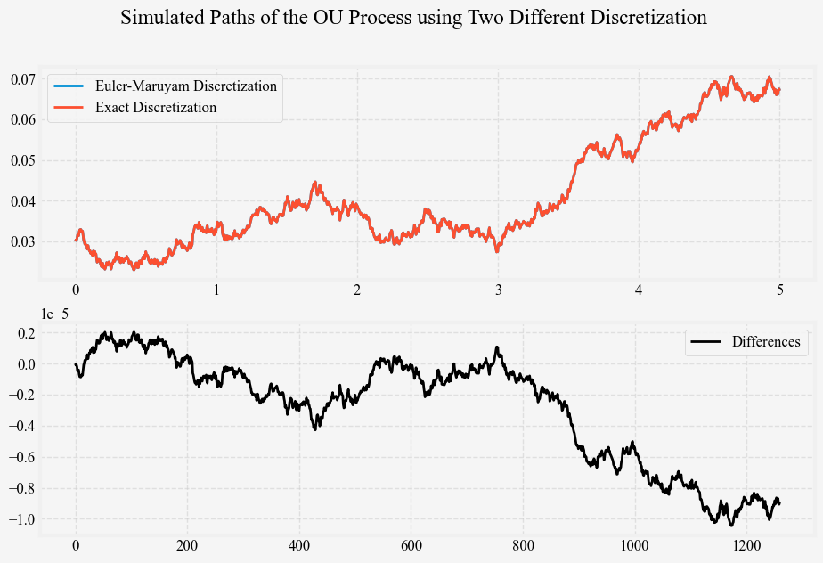
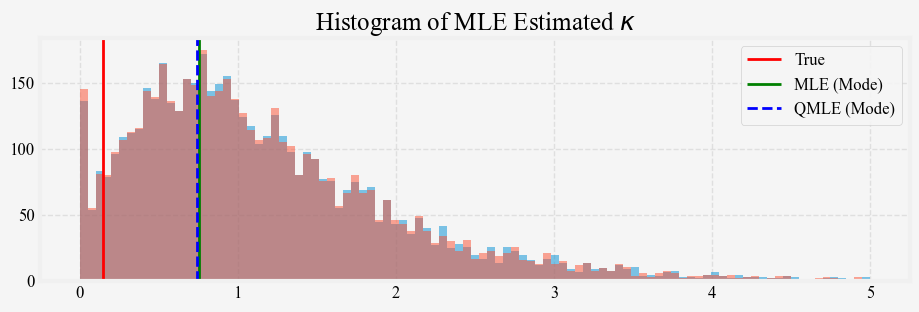
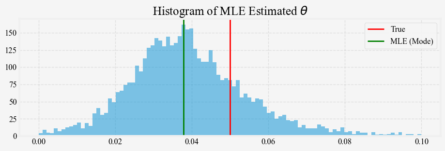
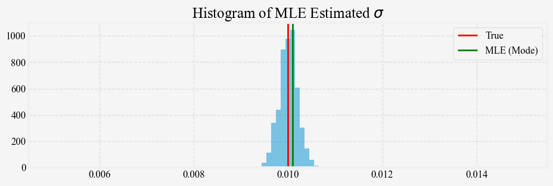
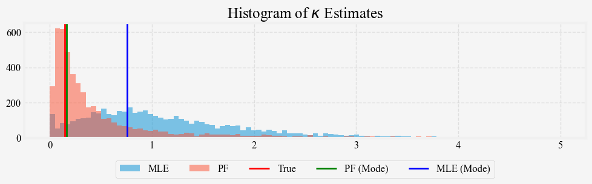

Short Rate Models (Part 4: Simulating and Calibrating the Vasicek Model)
Table of Contents
The code for this post is on my Github.
Recap
In our previous post, we introduced the Vasicek model that used the Ornstein-Uhlenbeck (OU) process to model the dynamics of the short rates. We then derived solutions for both the OU process and bond prices. We can now focus on the more practical aspects: simulating the Vasicek model and estimating its parameters from market-observed short rates.
Given the extensive study of the OU process in finance and physics literature, we will focus on introducing other essential concepts related to simulating and estimating the Vasicek model. When introducing how we simulate the OU process, we also discuss the convergence of the Euler-Maruyama discretization to the exact discretization. The different discretization is also the distinquishment between the likelihood and the quasi-likelihood function, leading us to the section on parameter estimation using the maximum likelihood methods. We will then demonstrate and discuss the limitation of the maximum likelihood estimator on finite samples. To overcome these issues, we introduce a particle filtering estimation method which has shown promising results in our empirical studies.
Simulating Vasicek Model
We can simulate the Vasicek short-rate process directly applying the Euler-Maruyama discretization to its stochastic differential equation (SDE). This method can introduce time-aggregation error when the discretization step \[\Delta t\] is large. A better approach when \[\Delta t\] is large is to apply Euler-Maruyama discretization to the solution of the SDE. More specifically, if we discretize the Vasicek SDE, we get
\[ \begin{equation} \Delta r_t = \kappa(\theta - r_t) \Delta t + \sigma \sqrt{\Delta t} N(0, 1) \end{equation} \]
and if we discretize the solution of the Vasicek SDE, as derived from Post 3
\[ \begin{equation} r_s = r_t e^{-\kappa \left(s-t\right)} + \theta \left(1 - e^{-\kappa\left(s-t\right)}\right) + \sigma \int_t^s e^{-\kappa \left(u-t\right)} dW_u \end{equation} \]
and substitute \[s = t + \Delta t\], we get the following discrete SDE:
\[ \begin{equation} \Delta r_t = r_{t + \Delta t} - r_t = \left(1 - e^{-\kappa \Delta t}\right) \left(\theta - r_t\right) + \sqrt{\frac{ \sigma^2 \left(1 - e^{-2 \kappa \Delta t} \right) }{ 2 \kappa } } N(0, 1) \end{equation} \]
As \[\kappa\] or \[\Delta t\] gets larger, the difference between \[\kappa \Delta t\] and \[\left(1 - e^{-\kappa \Delta t}\right)\] also grows larger; similarly, the difference between \[\sigma \sqrt{\Delta t}\] and \[\sqrt{\frac{ \sigma^2 \left(1 - e^{-2 \kappa \Delta t} \right) }{ 2 \kappa } }\] also grows larger. In practice, these differences are insignificant, and we will demonstrate this by comparing the simulated path of the OU process under the Euler-Maruyama method and the exact method. In the optional section below, we will show that the differences are bounded by \[\mathcal{O}(\Delta t^2)\].
The following figure illustrates this by plotting the same short rate path generated from these two methods, simulate_vasicek_short_rates_euler and simulate_vasicek_short_rates_exact.
def simulate_vasicek_short_rates_euler(r0, kappa, theta, sigma, t, dt, seed=None):
"""
Simulates the Vasicek short rates model using the
Euler-Maruyama discretization.
Parameters:
r0 (float): Initial (current) short rate.
kappa (float): Speed of mean reversion.
theta (float): Long-term mean level of the short rate.
sigma (float): Annualized volatility of the short rate process.
t (float): Number of years to simulate.
dt (float): Time step size.
Returns:
times (np.ndarray): Time steps.
rates (np.ndarray): Simulated short rates.
"""
np.random.seed(seed)
nd = int(t / dt)
times = np.linspace(0, t, nd)
rates = np.zeros(nd)
rates[0] = r0
diffusion = sigma * np.random.normal(0, np.sqrt(dt), nd)
for t in range(1, nd):
dr = kappa * (theta - rates[t-1]) * dt + diffusion[t]
rates[t] = rates[t-1] + dr
return times, rates
def simulate_vasicek_short_rates_exact(r0, kappa, theta, sigma, t, dt, seed=None):
"""
Simulates the Vasicek short rates model using the
analytical solution
Parameters:
r0 (float): Initial (current) short rate.
kappa (float): Speed of mean reversion.
theta (float): Long-term mean level of the short rate.
sigma (float): Annualized volatility of the short rate process.
t (float): Number of years to simulate.
dt (float): Time step size.
Returns:
times (np.ndarray): Time steps.
rates (np.ndarray): Simulated short rates.
"""
np.random.seed(seed)
nd = int(t / dt)
times = np.linspace(0, t, nd)
rates = np.zeros(nd)
rates[0] = r0
exp_kappa_dt = np.exp(-kappa * dt)
variance = sigma**2 * (1 - np.exp(-2 * kappa * dt)) / (2 * kappa)
for t in range(1, nd):
exp_rate = (theta * (1 - exp_kappa_dt) + rates[t-1] * exp_kappa_dt)
rates[t] = np.random.normal(exp_rate, np.sqrt(variance))
return times, rates
Using \[r_0 = 0.05\], \[\kappa = 0.15\], \[\theta = 0.03\], \[\sigma = 0.01\], \[t = 5\], \[\Delta t = 1 / 252\], we plot the simulated short rate paths from the two methods below in Figure 1 top panel and their differences in the bottom panel.

Model Estimation
Now that we can simulate short rates from the Vasicek model with specific OU process parameters. We can ask ourselves if we can estimate or recover these parameters from the simulated short rates. The OU process’s parameters can be estimated using traditional methods such as the maximum likelihood estimation (MLE). There are other techniques based on regression and GMM, but we will not go through them here. Interested readers are referred here and other online resource. We also use this opportunity to introduce the quasi maximum likelihood estimation (QMLE), which relates the likelihood function to discretization schemes in our context. After these introductions, we demonstrate through simulations that the MLE parameter estimates from finite samples are problematic and discuss the source of the problem. We then introduce a particle filtering method to estimate the model parameters that empirically improve the parameter estimation.
Maximum Likelihood Estimation
Just as we did for the Merton model, we can derive the log-likelihood function for the Vasicek model by noting that conditional on the short rate at time \[t\], the short rate at time \[t+\Delta t\] is Gaussian distributed.
\[ \begin{equation} \begin{aligned} \ell(\kappa, \theta, \sigma) &= \log \left( p \left( r_1, r_2, \ldots, r_n \mid \kappa, \theta, \sigma \right) \right) \\ &= \log \left( \prod_{i=1}^n p \left( r_i \mid r_{i-1}, \kappa, \theta, \sigma \right) \right) \\ \end{aligned} \end{equation} \]
We can calculate \[p \left(r_i \vert r_{i-1}\right)\] analytically, in which the conditional distribution of \[r_{i+1}\] given \[r_i\] is Gaussian with mean \[e^{-\kappa \Delta t} r_{i-1} + \left(1 - e^{-\kappa \Delta t}\right)\theta + r_{i-1}\] and variance \[\frac{\sigma^2 \left(1 - e^{-2\kappa \Delta t}\right)}{2\kappa}\]. Alternatively, it is also tempting to just use the Euler-Maruyama method to discretize the OU process, then calculate the likelihood as Gaussian distributed with mean \[\kappa\left(\theta - r_{i-1}\right) \Delta t + r_{i-1}\] and variance \[\sigma^2\]. Since the second likelihood function approximates the first, it is called the quasi-log-likelihood function, and methods based on maximizing the quasi-log-likelihood function are called quasi-maximum likelihood estimation (QMLE). As with our simulation study in the previous section, where we bound the difference between the two discretization methods, it is easy to show that the difference between the mean and variance used in MLE and QMLE for the Vasicek model also converge as \[\Delta t \to 0\]. The difference is negligible at \[\Delta t = 1/252\] (a typical value for financial applications), and MLE and QMLE yield similar results.
The conditional distribution might not have a closed form for a more complex stochastic process. In such a case, we can approximate the likelihood function numerically. In these cases, we need to recognize that QMLE is not consistent at any \[\Delta t\], and its variance does not converge to the Cramér-Rao lower bound.
Below is the Python implementation of the MLE and QMLE for the Vasicek model.
def vasicek_quasi_log_likelihood(params, rates, dt):
kappa, theta, sigma = params
exp_r = rates[:-1] + kappa * (theta - rates[:-1]) * dt
var_r = sigma**2 * dt
logL = np.sum(
-0.5 * (
np.log(2 * np.pi * var_r) +
(rates[1:] - exp_r)**2 / var_r
)
)
return -logL
def calibrate_vasicek_qmle(rates, dt):
initial_params = [np.random.uniform(0, 1), np.mean(rates), np.std(np.diff(rates)) * np.sqrt(1/dt)]
bounds = [(1e-8, None), (None, None), (1e-8, None)]
result = minimize(
vasicek_quasi_log_likelihood, initial_params,
args=(rates, dt), bounds=bounds, method='Powell'
)
kappa, theta, sigma = result.x
return kappa, theta, sigma
def vasicek_log_likelihood(params, rates, dt):
kappa, theta, sigma = params
exp_r = theta * (1 - np.exp(-kappa * dt)) + rates[:-1] * np.exp(-kappa * dt)
var_r = sigma**2 * (1 - np.exp(-2 * kappa * dt)) / (2 * kappa)
logL = np.sum(
-0.5 * (
np.log(2 * np.pi * var_r) +
(rates[1:] - exp_r)**2 / var_r
)
)
return -logL
def calibrate_vasicek_mle(rates, dt):
initial_params = [np.random.uniform(0, 1), np.mean(rates), np.std(np.diff(rates)) * np.sqrt(1/dt)]
bounds = [(1e-8, None), (None, None), (1e-8, None)]
result = minimize(
vasicek_log_likelihood, initial_params,
args=(rates, dt), bounds=bounds, method='Powell'
)
kappa, theta, sigma = result.x
return kappa, theta, sigmaWe generate 5000 paths of the short rate process using the same \[\kappa = 0.15\], \[\theta = 0.03\], \[\sigma = 0.01\] and \[ r_0 = 0.05\] for \[t=5\] years, and apply the maximum likelihood to estimate the parameters from each path. Figures 3, 4, and 5 show the distribution of the MLE estimates for \[\kappa\], \[\theta\], and \[\sigma\] against their true values. The \[\kappa\] and \[\theta\] median estimates from the 5-year simulated samples are quite different from the true values, and the estimates’ variance is quite large. For the \[\kappa\] estimates, we also include the estimates from the QMLE. The results show that MLE and QMLE are very similar for the Vasicek model.



Why is it so hard to estimate the OU process parameters?
Estimating the OU process parameters \[\kappa\] and \[\theta\] from finite sample data is challenging for several reasons
Identification: For the \[\kappa\] estimates, when true \[\kappa\] is small, the OU process behaves almost like a random walk, meaning the process is barely mean-reverting within a finite sample. In this situation, the term \[e^{-\theta \Delta t}\] approaches 1, making it difficult to distinguish the contribution of \[\kappa\] and \[\theta\]. Moreover, looking at the log-likelihood function, we notice that \[\kappa\] and \[\theta\] show up together in the term \[\theta \left(1 - e^{-\kappa \Delta t}\right)\], and for small sample sizes, there is high correlation between these parameters: a slight change in \[\theta\] can often be compensated by a change in \[\kappa\]. As a result, the likelihood surface can be flat or ill-conditioned for both \[\kappa\] and \[\theta\], making it hard for MLE to find the true values.
Bias: In finite and short samples, the stochastic process may not have enough time to revert to its mean, making it difficult to observe the true behaviour of the mean-reversion process. If the sample path has not had enough realizations of reversion toward \[theta\], the estimates of \[\theta\] will be biased toward the initial value of the process. This bias is particularly problematic for processes that start far from \[\theta\]. Since the estimate of \[\kappa\] depends critically on \[\theta\]. If one is estimated poorly (e.g., due to a small sample size or near-unit root behaviour), the other will also be inaccurate. This compounding effect makes \[\theta\] hard to estimate independently when \[\kappa\] is small or uncertain. The MLE \[\kappa\] estimate is biased. The bias occurs because the likelihood function is non-linear in \[\kappa\], and small-sample variability causes the MLE to overestimate \[\kappa\]. This bias becomes significant when the sample size is small or when \[\kappa \Delta t\] is small (i.e., for slow mean-reversion).
Variance: the variance term in the likelihood function is inversely proportional to \[\kappa\]. As \[\kappa \to 0\], the variance of the process becomes very large, leading to a larger confidence interval and higher uncertainty in the parameter estimates.
Next, we propose a particle filtering method to estimate the parameters of the Vasicek model. This method helps address some of the abovementioned problems and empirically improves the parameter estimation. Let’s go!
Particle Filtering
I once worked on calibrating the Constant Elasticity of Variance (CEV) model to daily volatility surfaces. At first, I estimate the two parameters of the model by minimizing the mean squared error (MSE) between the observed and model volatility surfaces. However, this approach makes the estimated parameters unstable. Upon further examination and many advices later, I found that not only was the objective function non-linear, but it was also flat, and the model parameters were poorly identified. There was a non-linear region in the parameter space that all gave low MSE and had multiple local minima. After some brainstorming, I used the particle filter to estimate the parameters. The particle filtering also allows me to track multiple minimas over time and take their averages as the parameter estimates. The resulting parameter estimates were much smoother over time.
We have similar challenges with calibrating the Vasicek model: the nonlinearity (in finite samples), the flat likelihood function, and the poor identification of the parameters (\[\kappa\] and \[\theta\]). Therefore, we suspect that particle filtering can help improve the parameter estimation. Particle filtering, a sequential Monte Carlo method, addresses these challenges by approximating the posterior distribution of the parameters given the observations. Below, we briefly review each step of implementing the particle filtering method. These steps are
- Initialization
- Prediction
- Update
- Resampling
- MCMC
Particle filtering is computationally more expensive, so code and execution optimization is necessary. We use Numba to JIT compile our functions, and that means some functions from scipy need to be rewritten.
1. Initialization
The first step in our particle filtering algorithm is to initialize a set of \[N\] particles. For our Vasicek model, each particle represents a possible parameter set \[(\kappa, \theta, \sigma)\]. These particles are sampled from our prior distributions of each parameter of the Vasicek model:
\[ \begin{equation} \begin{aligned} \kappa_i &\sim \text{Gamma}(a_\kappa, b_\kappa) \\ \theta_i &\sim \mathcal{N}(\mu_\theta, \sigma_\theta^2) \\ \sigma_i &\sim \text{Gamma}(a_\sigma, b_\sigma) \\ \end{aligned} \end{equation} \]
\[\kappa\] (mean reversion speed): We use a Gamma distribution because \[\kappa\] must be positive. Moreover, from the histogram of MLE estimates for \[\kappa\] above, the Gamma distribution looks to be a decent approximation.
\[\theta\] (long-term mean): We use a Normal distribution as \[\theta\] can theoretically take any real value. In practice, it is often close to the average observed short rate.
\[\sigma\] (volatility): Like \[\kappa\], \[\sigma\] must be positive, so we again use a Gamma distribution.
The specific parameters of these distributions (\[a_\kappa\], \[b_\kappa\], \[\mu_\theta\], \[\sigma_\theta\], \[a_\sigma\], \[b_\sigma\]) should be chosen based on prior knowledge or preliminary analysis of the data. In our implementation, we used some reasonable default values, which can be adjusted as needed. For example, we can use the sample mean and standard deviation to set the parameters of the Normal distribution for \[\theta\].
Along with the particles, we initialize their weights to be uniformly distributed, giving each particle equal probability. As we process more data, these weights will be updated to reflect how well each particle explains the observed short rates.
In our code:
@njit
def initialize_particles(num_particles):
particles = np.column_stack((
np.random.gamma(2, 2, num_particles), # kappa
np.random.normal(0, 2, num_particles), # theta
np.random.gamma(2, 0.5, num_particles) # sigma
))
weights = np.ones(num_particles) / num_particles
return particles, weightsWe can compare and contrast the initialization of the particle filtering and the maximum likelihood estimation (MLE). In MLE, we typically start with a single set of parameter estimates and iteratively refine them. Here, we begin with a diverse set of parameter combinations, allowing us to explore the parameter space more thoroughly. This approach is particularly beneficial when dealing with complex, potentially multimodal likelihood surfaces, where MLE might get stuck in local optima.
As we proceed through the particle filtering algorithm, this initial diverse set of particles will be refined based on their ability to explain the observed data, eventually converging toward the most probable parameter distributions.
2. Prediction
We use the current parameter estimates for each time step to predict the short rate in the next period. In the OU process, the transition density from one state to the next follows a Gaussian distribution:
\[ r_t | r_{t-1}, \kappa, \theta, \sigma \sim \mathcal{N}(\mu_t, \Sigma_t) \]
Where the mean and variance are given by:
\[ \begin{equation} \begin{aligned} \mu_t &= r_{t-1}e^{-\kappa\Delta t} + \theta(1 - e^{-\kappa\Delta t}) \\ \Sigma_t &= \frac{\sigma^2}{2\kappa}(1 - e^{-2\kappa\Delta t}) \\ \end{aligned} \end{equation} \]
These equations should look familiar from our earlier derivation of the Vasicek model’s analytical solution. They are also the same as the likelihood function used in MLE.
We implement this transition in our ou_transition function:
@njit
def ou_transition(x, kappa, theta, sigma, dt):
mean = x * np.exp(-kappa * dt) + theta * (1 - np.exp(-kappa * dt))
var = (sigma**2 / (2 * kappa)) * (1 - np.exp(-2 * kappa * dt))
return np.random.normal(mean, np.sqrt(var))It is important to note that while this function returns a single sample, we will apply this transition to each particle in the context of particle filtering. This step propagates our entire set of parameter estimates forward in time, maintaining the diversity of our particle population.
In the next step (the update step), we will use these predicted states to update the weights of our particles based on how well they match the observed data. This back-and-forth between prediction and update is at the heart of the particle filtering algorithm, allowing us to refine our parameter estimates sequentially as we process more data.
3. Update
In the update step, we adjust our belief about the parameters based on new observations. It involves updating the weights of our particles to reflect how well each particle’s parameters explain the observed data. For each new observation, we update the weight of each particle based on the likelihood of the new observation given the parameters:
\[ w_t^i \propto w_{t-1}^i \cdot p(r_t \vert r_{t-1}, \kappa_i, \theta_i, \sigma_i) \]
Here, \[w_t^i\] is the updated weight for particle \[i\] at time \[t\], \[w_{t-1}^i\] is its previous weight, and \[p(r_t \vert r_{t-1}, \kappa_i, \theta_i, \sigma_i)\] is the likelihood of observing the current short rate \[r_t\] given the previous rate \[r_{t-1}\] and the parameters of particle \[i\].
The likelihood is the probability density function of the normal distribution:
\[ p(r_t | r_{t-1}, \kappa, \theta, \sigma) = \frac{1}{\sqrt{2\pi\Sigma_t}} \exp\left(-\frac{(r_t - \mu_t)^2}{2\Sigma_t}\right) \]
where \[\mu_t\] and \[\Sigma_t\] are the mean and variance of the transition density, as defined in the prediction step.
We implement this update process in two functions: compute_likelihood and update:
@njit
def compute_likelihood(r_prev, r_curr, kappa, theta, sigma, dt):
mean = r_prev * np.exp(-kappa * dt) + theta * (1 - np.exp(-kappa * dt))
var = (sigma**2 / (2 * kappa)) * (1 - np.exp(-2 * kappa * dt))
return np.exp(-0.5 * ((r_curr - mean)**2 / var)) / np.sqrt(2 * np.pi * var)
@njit
def update(particles, weights, r_prev, r_curr, dt):
likelihoods = compute_likelihood(r_prev, r_curr, particles[:, 0], particles[:, 1], particles[:, 2], dt) # compute the likelihood of the new observation given the parameters of each particle
weights *= likelihoods # update the weights by multiplying the likelihoods
weights /= np.sum(weights) # renormalize the weights
... # continue to the next stepThis update step marks a significant departure from traditional Maximum Likelihood Estimation (MLE):
Distribution vs. Point Estimate: In MLE, we iteratively refine a single set of parameters to maximize the likelihood. In particle filtering, we maintain a distribution of parameter sets (particles) and their associated probabilities (weights).
Full Posterior Representation: The particle weights represent the parameters’ full posterior distribution given the observed data. This provides a richer view of the parameter space compared to the point estimate from MLE.
Sequential Update: Particle filtering allows for sequential updating as new data arrives, making it well-suited for online estimation problems. MLE typically requires recomputation using all available data.
Handling Multimodality: By maintaining multiple hypotheses (particles), particle filtering can better handle multimodal likelihood surfaces where MLE might get stuck in local optima.
This approach allows us to capture the uncertainty in our parameter estimates and potentially explore multiple regions of high likelihood in the parameter space simultaneously. As we process more data, particles with parameters that consistently explain the observations well will gain more weight, while those that perform poorly will become less influential.
4. Resampling
After several iterations, many particles may end up with negligible weights, effectively reducing the number of particles contributing to the estimation. This phenomenon, known as particle degeneracy, can lead to poor approximations of the posterior distribution. Resampling is a way to address this problem.
To determine when to resample, we measure the effective sample size (ESS) of our particles. The ESS is an estimate of how many particles are effectively contributing to the approximation:
\[ N_{\text{eff}} = \frac{1}{\sum_{i=1}^N (w_t^i)^2} \]
where \[N\] is the total number of particles and \[w_t^i\] is the normalized weight of particle \[i\] at time \[t\]. The ESS ranges from 1 (when one particle has all the weight) to \[N\] (when all particles have equal weights).
We trigger resampling when the ESS falls below a certain threshold, typically half the number of particles:
\[ N_{\text{eff}} < \frac{N}{2} \]
This condition balances the need to maintain particle diversity with the computational cost of frequent resampling.
When resampling is triggered, we use a method called systematic resampling. This efficient method ensures that particles with higher weights are more likely to be selected. It is implemented as follows:
- Compute the cumulative sum of weights.
- Generate a random starting point \[u_0 \sim U(0, \frac{1}{N})\].
- For \[i = 0, ..., N-1\]:
- Set \[u_i = u_0 + \frac{i}{N}\]
- Find the smallest \[j\] such that the cumulative sum up to \[j\] is greater than \[u_i\].
- Select the \[j\]-th particle.
This method ensures that particles are selected proportionally to their weights while introducing some randomness to maintain diversity.
@njit
def update(particles, weights, r_prev, r_curr, dt):
... # continue from previous step
if 1 / np.sum(weights**2) < len(particles) / 2:
particles = systematic_resample(particles, weights)
weights = np.ones(len(weights)) / len(weights)
particles = mcmc(particles, weights, r_prev, r_curr, dt)
return particles, weights
@njit
def systematic_resample(particles, weights):
N = len(weights)
indices = np.zeros(N, dtype=np.int64)
C = np.cumsum(weights) # compute the cumulative sum of the weights
u0 = np.random.random() / N # generate a random starting point
j = 0 # initialize the index
# Iterate through the particles, selecting indices based on
# where `u` falls in the cumulative sum.
for i in range(N):
u = u0 + i / N
while u > C[j]:
j += 1 # increment the index until u is less than the cumulative sum
indices[i] = j
# Return the particles at the selected indices
return particles[indices]If the algorithm stops here, many particles would have the same values after a few resamples because resampling does not introduce any new particles; it simply selects particles with high weights more often, and we end up with many particles of the same value. To circumvent this, we apply the Markov-Chain Monte Carlo (MCMC)(discussed in the next section) to introduce additional diversity among the resampled particles.
5. Markov-Chain Monte Carlo
Markov Chain Monte Carlo (MCMC) is a class of algorithms primarily used for sampling from complex or high-dimensional probability distributions based on Markov chains. It can improve particle diversity and exploration of the parameter space. Specifically, we apply a Metropolis-Hastings algorithm to resample from the empirical (target) distribution.
The Metropolis-Hastings algorithm works by constructing a Markov chain with the desired distribution as its equilibrium distribution. It does this through a series of accept/reject steps:
- Start with an initial state (in our case, the current particle).
- Propose a new state according to some proposal distribution.
- Calculate the probability of accepting the new state.
- Accept or reject the new state based on this probability.
We implement the Metropolis-Hastings steps as follows:
Propose a new particle position:
\[ (\kappa', \theta', \sigma') \sim \mathcal{N}((\kappa, \theta, \sigma), \Sigma_{\text{adaptive}}) \]
We use a multivariate normal distribution centred at the current particle position with an adaptive covariance matrix. The distribution of the proposed particle would be similar to the target distribution.
Compute the acceptance ratio:
\[ \alpha = \min\left(1, \frac{p(r_t | r_{t-1}, \kappa', \theta', \sigma')}{p(r_t | r_{t-1}, \kappa, \theta, \sigma)}\right) \]
The acceptance ratio compares the likelihood of the proposed state to the current state. If the proposed state is more likely (ratio > 1), we always accept it. If it is less likely, we may still accept it with some probability. This way, the algorithm can explore less likely but potentially important regions of the parameter space.
Accept the proposal with probability \[\alpha\]: We generate a random number between 0 and 1. If it is less than \[\alpha\], we accept the proposed state; otherwise, we keep the current particle.
The adaptive covariance \[\Sigma_{\text{adaptive}}\] is computed using the kernel-density estimate using Gaussian kernels. We reimplemented here to be compatible with Numba. This adaptive scheme allows the proposal distribution to adjust to the shape of the target distribution as we gather more information about it through our particles. We implemented this idea in our adaptive_kernel and mcmc functions:
@njit
def adaptive_kernel(particles, weights):
# reimplementation of
# https://docs.scipy.org/doc/scipy/reference/generated/scipy.stats.gaussian_kde.html
cov = weighted_cov(particles, weights)
d = cov.shape[0]
h = (4 / (len(particles) * (2 + d))) ** (1/(d+4))
return h * cov
@njit
def mcmc(particles, weights, r_prev, r_curr, dt):
cov = adaptive_kernel(particles, weights)
new_particles = np.empty_like(particles)
for i in range(len(particles)):
proposal = multivariate_normal(particles[i], cov)
if proposal[0] > 0 and proposal[2] > 0:
log_prob_old = np.log(compute_likelihood(r_prev, r_curr, particles[i, 0], particles[i, 1], particles[i, 2], dt))
log_prob_new = np.log(compute_likelihood(r_prev, r_curr, proposal[0], proposal[1], proposal[2], dt))
if np.log(np.random.random()) < log_prob_new - log_prob_old:
new_particles[i] = proposal
else:
new_particles[i] = particles[i]
else:
new_particles[i] = particles[i]
return new_particlesThe mcmc function proposes new positions for each particle, accepting or rejecting based on the Metropolis-Hastings criterion. We use log probabilities to avoid numerical underflow and ensure κ and σ remain positive. The condition proposal[0] > 0 and proposal[2] > 0 ensures that we only consider valid proposals where κ and σ are positive, as required by the Vasicek model.
The MCMC step replaces some particles with higher likelihoods, making the particle filtering more efficient at approximating the target distribution.
Tying It All Together
The calibrate_vasicek_particle_filter runs the complete particle filtering algorithm that calibrates the Vasicek model:
@njit
def estimate(particles, weights):
return np.sum(particles * weights[:, np.newaxis], axis=0)
@njit
def calibrate_vasicek_particle_filter(data, dt, num_particles=1000):
particles, weights = initialize_particles(num_particles) # initialize the particles and weights
for t in range(1, len(data)): # Sequential processing of observed data.
particles, weights = update(particles, weights, data[t-1], data[t], dt)
return estimate(particles, weights)In the estimate function, we compute the parameter estimates as the weighted average of all the values. We can also try other estimates, such as the weighted median or the mode, but we will leave that to interested readers.
Comparison
After all that, let us compare the results of particle filtering to those of the MLE. We repeat our previous experiment: simulate 5000 paths of the 5-year short rate under the Vasicek model and compare the estimated \[\kappa\] from the two methods. The histograms below show the estimated \[\kappa\] from MLE and particle filtering. Figure 6 plots the mode of their respective distribution against the true value.

We see that the particle filter estimate’s distribution is much less dispersed than that of the MLE. Its mode is also much closer to the true value than the MLE estimate’s.
Wrapping Up and Looking Ahead
In this post we cover the more practical aspects of the Vasicek model, focusing on simulation and estimation techniques. We explored two methods for simulating the Vasicek short-rate process: the Euler-Maruyama discretization and the exact method. While these methods yield slightly different results, we demonstrated that their differences are negligible for commonly used discretization step sizes and showed that the Euler-Maruyama discretization converge strongly to the exact solution.
The challenge of estimating the Vasicek model parameters became evident as we examined the maximum likelihood estimation (MLE) results. Our simulation study revealed significant biases and large variances in the MLE estimates, particularly for the mean-reversion parameter \[\kappa\]. These issues stem from the complex interplay between the model parameters and the finite sample sizes typically available in practice.
To address these challenges, we introduced a particle filtering approach and present a detailed implementation. This method showed promising results as it produces more stable and accurate parameter estimates than the MLE. The particle filter’s ability to maintain multiple hypotheses and sequentially update parameter estimates makes it well-suited for online and adaptive situations we often desire in practice.
There is a lot more we can do for both the Vasicek model and the particle filter. For example, we can take the paths of the particles and compute a time series of parameter estimates. If the parameters are stable (validated using simulated data, for example), we can apply the model to real-world data, analyze the behaviour of each parameter in different economic regimes, and draw conclusions about how macro variables impact variables like \[\kappa\] or \[\theta\].
In our next post, we will broaden our perspective by introducing the affine term structure model, a general framework that encompasses both the Merton and Vasicek models as special cases. The affine term structure model provides a unified approach to understanding and comparing different short-rate models, setting the stage for more advanced applications in term-structure modelling.
Optional: Strong Convergence of the Euler-Maruyama Method Applied to the OU process
In this section, we show that the Euler-Maruyama method has a strong convergence of order 0.5 to the exact solution of the OU process.
Let us first define what strong convergence of a discretization method means. A numerical method \[M\] has strong convergence of order \[\alpha\] to the exact solution for a stochastic process \[r_t\] if the expected absolute error satisfies
\[ \begin{equation} \mathbb{E} \left[ \underset{0 \leq t \leq T}{\sup} \left| r_t - r_t^M \right| \right] = \mathcal{O}(\Delta t^{\alpha}) \end{equation} \]
where \[r_T\] is the exact solution of the SDE and \[r_T^M\] is the numerical approximation. As we have shown earlier, the Euler Maruyama (EM) discretization of the OU process gives the approximation
\[ \begin{equation} r_{t + \Delta t}^{EM} = r_t^{EM} + \kappa \left(\theta - r_t^{EM} \right) \Delta t + \sigma \sqrt{\Delta t} \epsilon_t \end{equation} \]
whereas the exact solution gives the equation
\[ \begin{equation} r_{t+\Delta t} = r_t e^{-\kappa \left(\Delta t\right)} + \theta \left(1 - e^{-\kappa\left(\Delta t\right)}\right) + \sigma \int_t^{t + \Delta t} e^{-\kappa \left(u-t\right)} dW_u \end{equation} \]
Denote \[r(t_n) = r_{t_n}\]. The error \[e_{n+1} = r(t_n) - r_n^{EM}\] can be decomposed into three parts:
\[ \begin{equation} \begin{aligned} e_{n+1} &= r(t_n) - r_n^{EM} & \\ &= \left(r(t_n) e^{-\kappa \Delta t} + \theta \left(1 - e^{-\kappa\left(\Delta t\right)}\right) + \sigma \int_t^{t + \Delta t} e^{-\kappa \left(u-t\right)} dW_u\right) & \\ &- \left(r_n^{EM} + \kappa \left(\theta - r_n^{EM}\right) \Delta t + \sigma \sqrt{\Delta t} \epsilon_{n} \right) & \\ &= \left(r(t_n) e^{-\kappa \Delta t} - r_n^{EM} \right) & \text{Part (1)} \\ &+ \left(\theta \left(1 - e^{-\kappa\left(\Delta t\right)}\right) - \kappa \left(\theta - r_n^{EM}\right) \Delta t \right) & \text{Part (2)} \\ &+ \left(\sigma \int_t^{t + \Delta t} e^{-\kappa \left(u-t\right)} dW_u - \sigma \sqrt{\Delta t} \epsilon_{n} \right) & \text{Part (3)} \end{aligned} \end{equation} \]
The first part is the error from the drift term involving the short rate \[r(t_n)\]:
\[ \begin{equation} \begin{aligned} \text{Part (1)} &= r(t_n)e^{-\kappa \Delta t} - \left(r_n^{EM} + \kappa \left(\theta - r_n^{EM}\right) \Delta t \right) \\ &= r(t_n)\left(1 - \kappa\Delta t + \mathcal{O}(\Delta t^2)\right) - r_n^{EM}\left(1 + \kappa \Delta t + \mathcal{O}(\Delta t^2)\right) \quad \text{(by Taylor expansion)} \\ &= r(t_n) - r_n^{EM} - \kappa \Delta t r(t_n) + \kappa \Delta t r_n^{EM} + \mathcal{O}(\Delta t^2) \\ &= \left(1 - \kappa \Delta t\right) e_n + \mathcal{O}(\Delta t^2) \end{aligned} \end{equation} \]
The second part is the error from the drift term involving the mean reversion \[\theta\]:
\[ \begin{equation} \begin{aligned} \text{Part (2)} &= \theta \left(1 - e^{-\kappa \Delta t}\right) - \kappa\theta \Delta t \\ &= \theta \left(1 - 1 + \kappa \Delta t + \mathcal{O}(\Delta t^2)\right) - \kappa\theta \Delta t \quad \text{(by Taylor expansion)} \\ &= \mathcal{O}(\Delta t^2) \end{aligned} \end{equation} \]
The third part is the error from the diffusion term and has a normal distribution with mean 0 and variance \[\sigma^2 \left(\frac{1 - e^{-2\kappa \Delta t}}{2\kappa} - \Delta t \right)\]. The variance can be simplified as
\[ \begin{equation} \begin{aligned} \mathrm{Var}(\text{Part (3)}) &= \sigma^2 \left(\frac{1 - e^{-2\kappa \Delta t}}{2\kappa} - \Delta t\right) \\ &= \sigma^2 \left(\Delta t - \frac{2\kappa \Delta t^2}{3} + \mathcal{O}(\Delta t^3) - \Delta t\right) \quad \text{(by Taylor expansion)} \\ &= \mathcal{O}(\Delta t^2) \end{aligned} \end{equation} \]
Putting these terms together, the error \[e_{n+1}\] can be written as
\[ \begin{equation} \begin{aligned} e_{n+1} &= e_n \left(1 - \kappa \Delta t\right) + \Delta e_n \\ \end{aligned} \end{equation} \]
where \[\Delta e_n\] is the error from the mean-reversion term and the diffusion term and has order \[\mathcal{O}(\Delta t^2)\].
To show that the Euler-Maruyama method converges to the exact solution of the OU process, we need to show that the expected absolute error satisfies
\[ \begin{equation} \mathbb{E} \left[ \underset{0 \leq t \leq T}{\sup} \left| r(t) - r_t^{EM} \right| \right] = \mathcal{O}(\Delta t) \end{equation} \]
Squaring the error and taking the expected value, we get
\[ \begin{equation} \begin{aligned} \mathbb{E} \left[ |e_{n+1}|^2 \right] &\leq \left(1 - \kappa \Delta t\right)^2 \mathbb{E} \left[ |e_n|^2 \right] + C_1 \Delta t^2 \\ &\leq \left(1 - 2 \kappa \Delta t\right) \mathbb{E} \left[ |e_n|^2 \right] + C_1 \Delta t^2 \quad \text{for small } \Delta t \\ \end{aligned} \end{equation} \]
Here we introduce a version of Gronwall’s inequality, which is a useful tool to bound the solution of a differential or difference equations. It states that if \[f\] is a non-negative function and satisfies \[\frac{d}{dt} f(t) \leq a_1 f(t) + a_0\] for all \[t\], then
\[ \begin{equation} f(t) \leq f(0) e^{a_1 t} + \frac{a_0}{a_1} \left(e^{a_1 t} - 1\right) \end{equation} \]
and for the difference equation, if \[f\] satisfies \[f(n+1) - f(n) \leq a_1 f(n) + a_0\] for all \[n \geq 0\], then
\[ \begin{equation} f(n) \leq f(0) e^{a_1 n} + \frac{a_0}{a_1} \left(e^{a_1 n} - 1\right) \end{equation} \]
Let \[f(n) = \mathbb{E} \left[ \lvert e_n \rvert^2 \right]\] and substituting into the inequality, we have
\[ \begin{equation} \begin{aligned} \mathbb{E} \left[ |e_{n+1}|^2 \right] &\leq \left(1 - 2 \kappa \Delta t\right) \mathbb{E} \left[ |e_n|^2 \right] + C_1 \Delta t^2 \\ &\Longrightarrow \mathbb{E} \left[ |e_{n+1}|^2 - |e_{n}|^2 \right] \leq \left(- 2 \kappa \Delta t\right) \mathbb{E} \left[ |e_n|^2 \right] + C_1 \Delta t^2 \\ &\Longrightarrow \mathbb{E} \left[ |e_{n}|^2 \right] \leq \mathbb{E} \left[ |e_{0}|^2 \right] e^{-2 \kappa \Delta t n} + \frac{C_1 \Delta t^2}{2 \kappa\Delta t} \left(e^{-2 \kappa \Delta t n} - 1\right) \\ &\Longrightarrow \mathbb{E} \left[ |e_{n}|^2 \right] \leq \mathbb{E} \left[ |e_{0}|^2 \right] e^{-2 \kappa \Delta t n} + C_2 \Delta t \\ \end{aligned} \end{equation} \]
Finally, to compute the strong convergence rate, we take the square root of the mean-square error \[\mathbb{E} \left[ \lvert e_n \rvert^2 \right]\], and the expected absolute error has bound \[\mathbb{E} \left[ \lvert e_n \rvert \right] \leq \sqrt{\mathbb{E} \left[ \lvert e_n \rvert^2 \right]} = \mathcal{O}(\Delta t)\] by Jensen’s inequality.
We have shown that the Euler-Maruyama method has strong convergence of order \[1/2\] to the exact solution of the OU process.